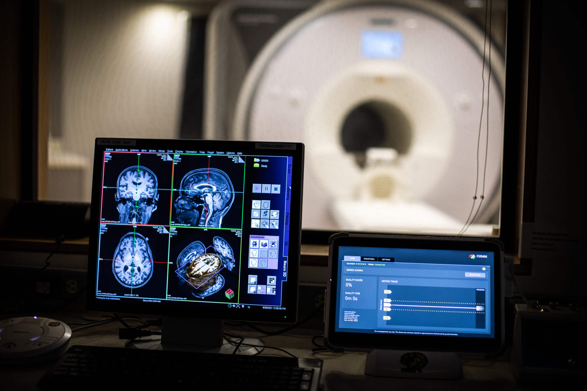

This project aims to predict the onset and classification of Alzheimer's Disease using MRI scan data. Utilizing the OASIS longitudinal dataset, which includes various parameters such as MRI IDs, demographic details, and clinical assessments, I developed a predictive model leveraging machine learning techniques

The Cancer Risk Assessment Calculator is a Python-based GUI tool designed to help individuals determine their risk of developing cancer. This tool considers multiple factors such as age, gender, smoking habits, diet, exercise, family history, and alcohol consumption to calculate the risk level.

In this initiative, I spearheaded the efforts to leverage Power BI's capabilities to extract and visualize critical insights from our employee performance data at INX Future Inc. The objective was to use these insights to propose strategies grounded in data to boost workforce efficiency, satisfaction, and retention.

The project focuses on developing an advanced diagnostic recommendation system leveraging machine learning to deliver personalized healthcare solutions. It aims to provide not only medication suggestions but also a comprehensive diagnosis that includes identifying diseases, associated precautions, recommended workouts, specific medications, and diet suggestions based on the patient's unique symptoms. The goal is to ensure timely and appropriate medication along with holistic advice to manage and improve health conditions effectively, enhancing healthcare decision-making with a complete, personalized health management plan.

The project aims to develop a machine learning model to predict liver disease at an early stage, utilizing data from the Indian Liver Patient Dataset (ILPD). Early detection is crucial for effective management and treatment of liver diseases, improving patient outcomes and reducing healthcare costs.

The Telehealth-Patient Integration Project aims to enhance healthcare delivery using telecommunications technologies, focusing on improving access for elderly patients and those in remote or underserved areas. By developing user-friendly telehealth applications, remote patient monitoring systems, and comprehensive implementation guides, this project seeks to address the barriers in telehealth adoption. A key aspect of the project involved collaborating with stakeholders to understand their Care Convene platform and work on overcoming the barriers associated with it.

Developed a machine learning model to predict obesity levels using behavioral and physical attributes. Conducted extensive data analysis and visualization, trained multiple models (Random Forest Bagging Classifier, SVM, Gaussian Naive Bayes), and achieved the highest accuracy of 96.69% with the SVM classifier. This project showcases my ability to handle real-world datasets, perform exploratory data analysis, and apply machine learning algorithms to solve health-related problems.

"Breaking Bad: Stealing Patient Data Through Medical Devices" delves into the alarming security vulnerabilities found in connected medical devices and their repercussions for patient data security. As the healthcare industry embraces the Internet of Things (IoT), a plethora of connected medical devices has emerged, bringing both advancements and new risks. This project highlights the critical need for robust cybersecurity measures to protect sensitive patient information.

Developed a deep learning model using convolutional neural networks (CNNs) to detect brain tumors from MRI scans. Conducted extensive data preprocessing and augmentation, designed and trained multiple CNN architectures, and achieved an accuracy of 94% on the testing set. This project highlights my expertise in deep learning and medical image analysis, demonstrating my ability to apply advanced machine learning techniques to solve complex healthcare problems.

Developed a deep learning model using convolutional neural networks (CNNs) to predict Alzheimer's disease and its severity from MRI scans. Conducted extensive data preprocessing and augmentation, designed and trained multiple CNN architectures, and achieved an accuracy of 94% on the testing set. This project highlights my expertise in deep learning and medical image analysis, demonstrating my ability to apply advanced machine learning techniques to solve complex healthcare problems.